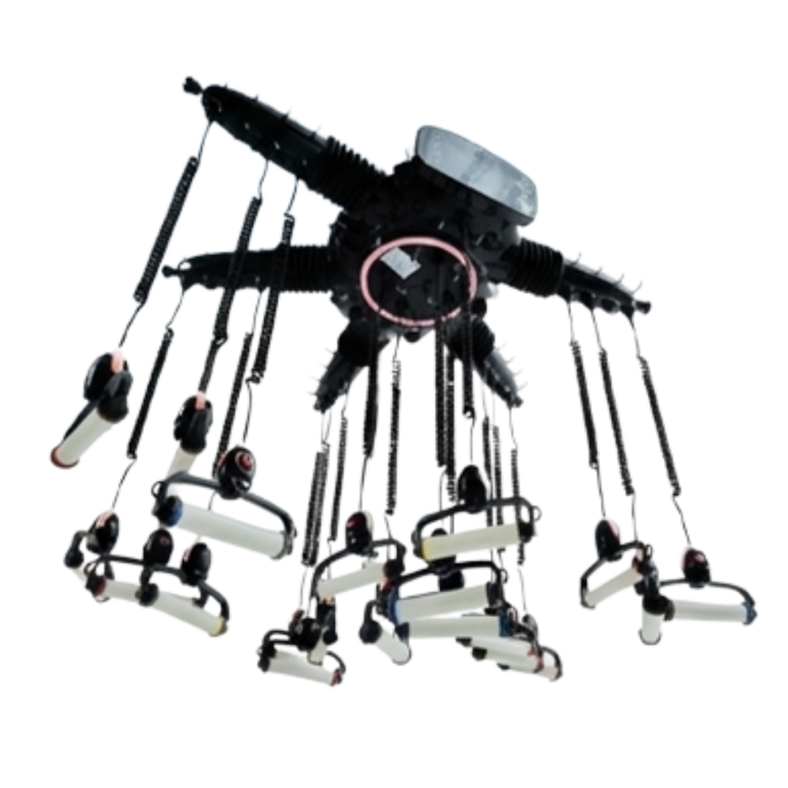

従来機と何が違うのかわからない
導入検討中のサロン様へ
動画でわかる
ZERO GRA WAVE
導入ガイド
セミナー・デモ・体験でお伝えしている内容を、導入検討中のサロン様向けに動画でまとめました。仕上がり、施術工程、操作方法、メニュー化、導入後の活用まで、このページの順番に見るだけで確認できます。
無重力のような
新しいカール体験を、
すべてのサロンへ。

WATCH
従来機との違い
導入前に、
こんな不安はありませんか？
本当に仕上がりに差が出るのか不安
操作や施術が難しくないか不安
スタッフが使いこなせるか不安
メニュー単価を上げられるか不安
導入後の集客やリピートにつながるか不安
セミナーやデモを受けないと判断できないのでは
CHECK FIRST
まずは、従来機との違いをご覧ください
ゼログラウェーブを検討するうえで、最初に知っていただきたいのは、「従来のデジタルパーマ機と何が違うのか」という点です。仕上がりの違い、施術時の扱いやすさ、構造の違いを動画で確認することで、導入価値がよりわかりやすくなります。
動画を見る（YouTube）FEATURE MOVIE
ゼログラの特徴３つを解説
STEP 01
STEP 01｜仕上がりを見る
Instagramのスタイル投稿で、ゼログラウェーブの仕上がりを確認できます。中間からのリッジ、毛先の柔らかさ、コテ巻き風の質感をご覧ください。
韓国風コテ巻き風メンズロングミディアム
STEP 02
STEP 02｜施術工程を見る
実際の施術工程や加温の流れを動画で確認できます。導入後のサロンワークをイメージしやすいセクションです。
apish真鍋氏による韓国風パーマ施術動画
施術工程、加温の流れ、仕上がりまでを確認するための動画枠です。
YouTubeで見るSTEP 03
STEP 03｜操作・組み立てを見る
機器の組み立て方や操作方法を動画で確認できます。スタッフ教育や導入後の確認用としても活用できます。
STEP 04
STEP 04｜プロの解説を見る
プロによる解説で、ゼログラウェーブの導入価値やサロンワークでの活用ポイントを理解できます。
STEP 05
STEP 05｜導入サロンインタビュー
実際にZERO GRA WAVEを導入したサロン様の声から、導入後の活用イメージやサロンワークでの取り入れ方を確認できます。
導入前の不安は、こちらの動画で確認できます
従来機と何が違うのか知りたい従来機との比較動画
仕上がりに差が出る理由を知りたい比較動画＋仕上がり投稿
韓国風パーマに使えるか不安韓国風パーマ施術動画
操作が難しそうで不安機器操作説明動画
組み立てが不安組み立て方法動画
スタッフが使いこなせるか不安操作説明＋施術工程動画
メンズにも使えるか不安メンズカール動画
ブリーチ毛にも提案できるか不安低温時短カール動画
導入価値を第三者の声で知りたいプロ解説動画
従来機と何が違うのか知りたい
従来機との比較動画
仕上がりに差が出る理由を知りたい
比較動画＋仕上がり投稿
韓国風パーマに使えるか不安
韓国風パーマ施術動画
操作が難しそうで不安
機器操作説明動画
組み立てが不安
組み立て方法動画
スタッフが使いこなせるか不安
操作説明＋施術工程動画
メンズにも使えるか不安
メンズカール動画
ブリーチ毛にも提案できるか不安
低温時短カール動画
導入価値を第三者の声で知りたい
プロ解説動画
Instagramでも多数のスタイル・施術事例を公開中
ZERO GRA WAVE公式Instagramでは、仕上がりスタイルや施術事例を随時公開しています。導入後のメニュー提案やSNSでの見せ方の参考としてご覧ください。
Instagramをチェックするよくあるご質問
導入までの流れを教えてください
導入条件やスケジュールはサロン様の状況により異なります。まずはお問い合わせページよりご相談ください。
講習や研修はありますか？
講習費や実施方法は正規代理店へお問い合わせください。オンライン講習は現在準備中です。
どのくらいの時間で施術できますか？
カットとパーマで2h〜3h程度です。ロッド数、薬剤放置時間、レングスによるドライ時間で変動します。
故障やトラブル時のサポートはありますか？
故障かなと思った場合、まずは購入された販売会社へお問い合わせください。本体故障の場合は代替品と交換いたします。
導入費用について教えてください
導入費用や条件は正規代理店へお問い合わせください。
アシスタントでも使用できますか？
ワインディング、毛髪診断ができれば使用可能です。ベースカットは別途必要です。
パーマの持ちはどれくらいですか？
4ヶ月〜6ヶ月です。ホームケアの方法やスタイルによって変わります。